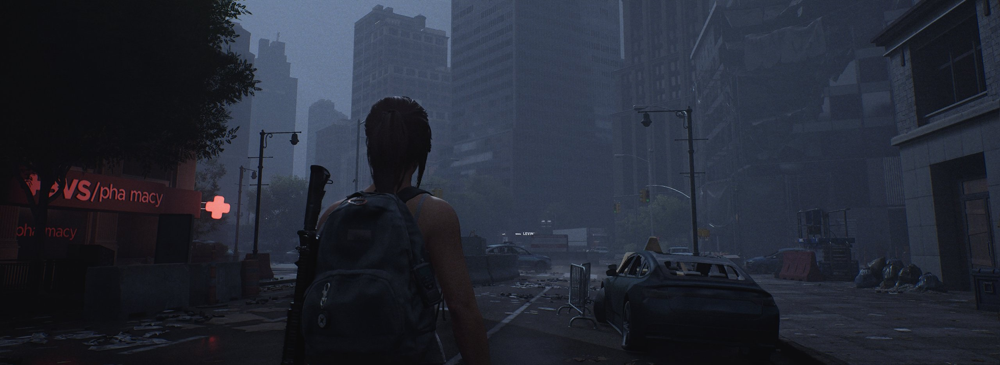
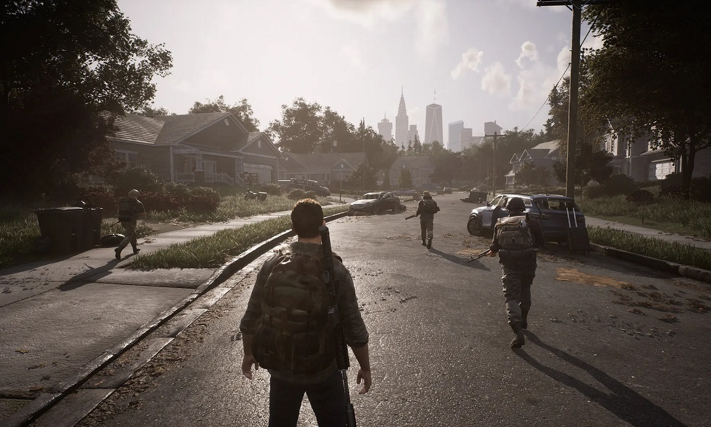

Devs niegan que The Day Before sea una estafa y prometen que debutará
Creativos afirmaron que no tienen motivos para engañar a los jugadores
A pocas semanas de su debut, The Day Before se retrasó 9 meses y desapareció misteriosamente de Steam. Por tal motivo, Fntastic ha perdido credibilidad antre los jugadores y muchos creen que su juego es una estafa. Debido a esto, el estudio decidió defenderse y aclarar la situación para recuperar la confianza de sus seguidores.
En un nuevo comunicado, los desarrolladores afirmaron que no tienen motivos para engañar a su comunidad. Así que recalcaron que The Day Before sea no es una estafa y prometieron que debutará en la nueva fecha fijada, es decir, el 10 de noviembre.
FNTASTIC promete que The day before llegara
Inicialmente, el estudio afirmó que su título se había retrasado por una disputa legal relacionada con su nombre. Ahora, la desarrolladora matizó sus palabras y declaró que el retraso ya estaba de todas formas planeado en su hoja de ruta.
Fntastic sabe que muchos desconfían del proyecto, sobre todo por la falta de gameplays y avances importantes. Hace meses prometieron un extenso video sobre el juego, que supuestamente no pueden liberar por la disputa legal y la posterior desaparición del juego en Steam. Pese a esto, el estudio prometió que The Day Before llegará y que no se trata de una estafa.
“Entendemos que algunos jugadores, al no ver el panorama completo, puedan tener dudas sobre el título. Siempre nos hemos centrado en el producto en sí. Llevamos 4 años creando el juego. Todos estos años han estado llenos de sudor y sangre para hacer este juego, y para muchos miembros de nuestro equipo, es desagradable escuchar tales acusaciones.
“No hemos recibido ni un céntimo de la gente: ni recaudación de fondos, ni pedidos anticipados, ni donaciones. El juego está financiado en su totalidad por Mytona, uno de los mayores editores de móviles del mundo, que ha comprobado la creación del juego en cada hito de nuestro contrato”, afirmó Fntastic.
Jugadores aun dudan de las declaraciones de FNSTASTIC
A pesar de las declaraciones del estudio, parte de la comunidad aún duda de todo lo relacionado con el proyecto. Sobre todo después de que Wholf, moderador principal de la comunidad del título, dio a entender que tampoco está seguro de que The Day Before sea real.
De acuerdo con los detalles, publicó un mensaje donde afirmó no haber visto ninguna secuencia de gameplay planeada como tal. Esto despertó aún más las sospechas por parte de los jugadores, así que su mensaje fue eliminado del Discord oficial del título.